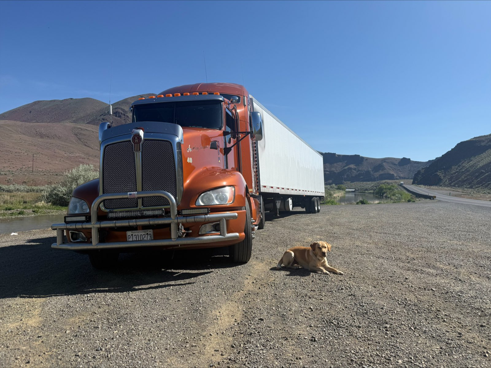
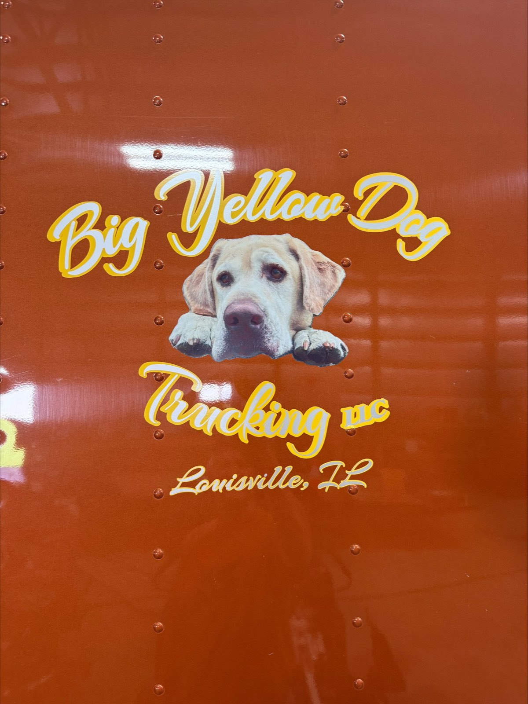

Recognizable equipment
The truck photos help customers, partners, and drivers recognize the Big Yellow Dog rig when it is on the road or at a stop.
Big Yellow Dog Truckin
Big Yellow Dog Truckin is the trucking side of the YellowDog.lol family, with the same recognizable branding and the same straightforward approach.
Recognizable on the road
This page gives Big Yellow Dog Truckin a simple home base where people can recognize the orange semi, connect it to the YellowDog brand, and see the trucking side of the operation.
The same branding, the same work ethic, and a yellow lab who is still convinced he should be involved in every department.


Meet the driver
The driver behind Big Yellow Dog Truckin brings over 2 million miles of over-the-road experience to every load — a lot of road, a lot of weather, and a lot of freight delivered on schedule.
Big Yellow Dog runs its own truck and trailer, hauls dry or refrigerated freight, and is willing to work with anyone. Straightforward, dependable, and easy to deal with — the same standard as the Diggin' side of the brand.
Archie has personally logged an undisclosed number of those miles from the passenger seat, mostly overseeing the snack schedule.
The truck photos help customers, partners, and drivers recognize the Big Yellow Dog rig when it is on the road or at a stop.
The trucking page stays visually tied to Lil Yellow Dog Diggin so both businesses feel like part of the same brand family.
Big Yellow Dog Truckin keeps things simple: clear communication, dependable equipment, and a driver people can count on.
Two businesses, one brand family